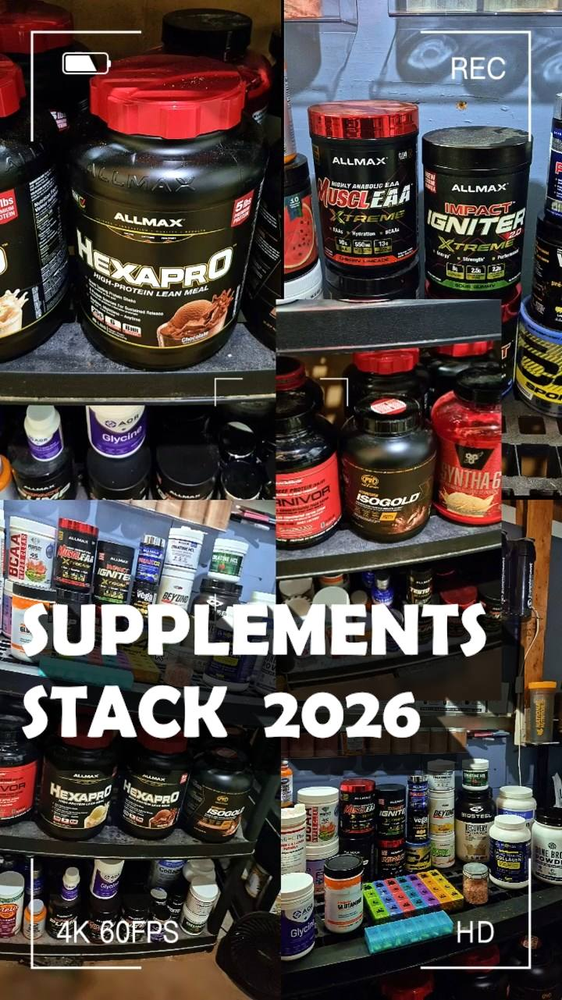

FIT PROTOCOL · V2.0Pills & accounting
8 · Supplements, Pills and Micronutrient Accounting
Chapter 8 - Supplements, pills and micronutrient accounting
23 pill records audited. Every dose below reproduces the V18700 operational record; the analysis
column states the evidence limit.
| Block | Recorded items and doses | Status | Evidence limit / watch |
|---|---|---|---|
| Wake Pack 03:30 | TESTOFX 3 caps (incl. BioPerine 9.5 mg piperine); Boron 1 x 3 mg; LactoBif 100 1 cap | Daily; probiotic intermittent | Fasting testosterone release not clinically established for this blend. |
| Meal 1 05:00 | Kyolic 104 2 caps; NAC 900 mg; NMN 175 mg; Digestive Enzymes Ultra 1 cap | Training and rest (enzymes) | NAC and NMN human outcome data limited; enzymes support tolerance, do not replace bile. |
| Pre-Gym | Citicoline 250 mg whole capsule | Training only | Contributes to cholinergic stack (see Part IV). |
| Lunch Grid (training only) | Multivitamin (incl. choline 57 mg, biotin share), Curcumin 500 + BioPerine 5 mg, Alpha-GPC 200 mg, DMAE, Huperzine A 200 mcg | Skipped on rest days | Piperine total reaches 14.5 mg/day on training days. Cholinergic load is the decisive watch. |
| Afternoon Grid (training only) | Co-factors per V18700 grid | Skipped on rest days | Grid skipped on rest days is a deliberate de-load of micronutrient stacking. |
| Night Stage 1 18:15 | Pure Magnesium Glycinate 240 mg; Tart Cherry 10X 1 cap; Milk Thistle 1 cap conditional | Training only | Supplemental magnesium must be summed across all sources (Part V). |
| Removed / paused | Zinc Supreme REMOVED (30 mg zinc gone); separate copper PAUSED | Do not reintroduce from old pages | Removal corrected zinc excess risk; copper paused with it. |
| Optional | Half-dose Medi-C (adds 1,000 mg vitamin C, 105 mg Mg); Hey Relax full scoop, rare (adds 200 mg Mg, 1,000 mg inositol) | Optional / rare only | Never promoted to daily requirements in this edition. |
Analysis 8A - why the grid is skipped on rest days. Skipping the lunch and afternoon grids on rest
days halves weekly exposure to piperine, cholinergic precursors and fat-soluble stacking. That rhythm is
protective. Eroding it for marginal micronutrient completeness would trade a real risk reduction for an unproven benefit.
Chapter 8 (continued) - Dose accounting with limits beside them
| Compound | Training day | Rest day | Limit / reference | Assessment |
|---|---|---|---|---|
| Biotin (total) | 425 mcg | 425 mcg | RDA 30 mcg; no UL | Assay interference risk, not toxicity (Part VI). |
| Supplemental magnesium | 341 mg baseline; 446 mg with half Medi-C; 541-646 mg with Hey Relax | Lower (night grid skipped; V10 option still counts) | UL 350 mg supplemental | Baseline near UL; optionals exceed it. Osmotic effect expected. |
| Caffeine (IGNITER) | About 373 mg net, plus Earl Grey 40-70 mg | Tea only | Health Canada 400 mg/day guidance | Training mornings regularly cross guidance when tea is summed. |
| Piperine | 14.5 mg (9.5 + 5) | 9.5 mg (TESTOFX only) | No established UL | CYP3A4 / P-glycoprotein inhibition is dose-relevant (Part IV). |
| Creatine HCl | 1.5 g (V4 750 mg + V10 750 mg) | 1.5 g (V5 750 mg + V10 750 mg) | No UL; saturation dose | Expands creatinine pool; eGFR interpretation needs Cystatin C. |
| Boron | 3 mg (1 capsule) | 3 mg | UL 20 mg | Locked at one capsule; wide margin. |
| R-ALA | 300 mg whole capsule pre- V4 | None | No UL | IAS flag in susceptible HLA carriers (Part IV). |
Dose reconciliation notes: the Canadian Carnivor panel contains zero added creatine - older assumptions crediting 2.5 g creatine to
V3 are disproven. V4 is deliberately half the BioSteel label serving (one 36 g scoop: 12 g protein, 19 g carbohydrate, 125 kcal).
RapiDrem Electrolyte Powder replaces BioSteel Hydration in V2 and V5 (1,000 mg potassium, 100 mg magnesium per scoop).
Clinical reference: Five interaction cascades · Margins · Laboratory integrity
Daily guide notes · Pills — the 21+2 Grid, Analysed
Pills — the 21+2 Grid, Analysed
The pill grid is the highest-trust page in the book: 23 audited records (Encyclopedia Ch. 8), each with a status that was decided once and does not drift. This page adds the interaction analysis behind each status.
| Status | Meaning | Analysis |
|---|---|---|
| Active | Take as scheduled | Re-checked against the full stack, not alone |
| Removed — Zinc Supreme | Do not take | System zinc already totals ~25 mg; removal prevents copper antagonism from worsening |
| Paused — Copper | Held pending review | Paused because zinc status governs copper need; recheck by lab, not by feeling |
| Locked — Boron 1 x 3 mg | Fixed dose | Locked low; boron shifts hormone binding, so the dose is a monitoring decision, not a growth lever |
The rule that protects the grid: nothing enters the grid without a stacked analysis (mechanism + interaction + margin + monitor + stop rule). A good ingredient in the wrong stack is a bad protocol.
HIGHEST-ATTENTION INTERACTIONS IN THE GRID
Piperine-containing items can inhibit CYP3A4 and P-glycoprotein, slowing clearance of many medications. Any prescription change must be checked against piperine timing.
Biotin (425 mcg total daily) interferes with common lab assays (see Labs page) — the grid and the lab calendar are linked.
Piperine total: about 14.5 mg on training days (9.5 + 5 mg) and 9.5 mg on rest days — the dose behind the CYP3A4 / P-glycoprotein caution above.
Source: Open the focused protocol file ↗